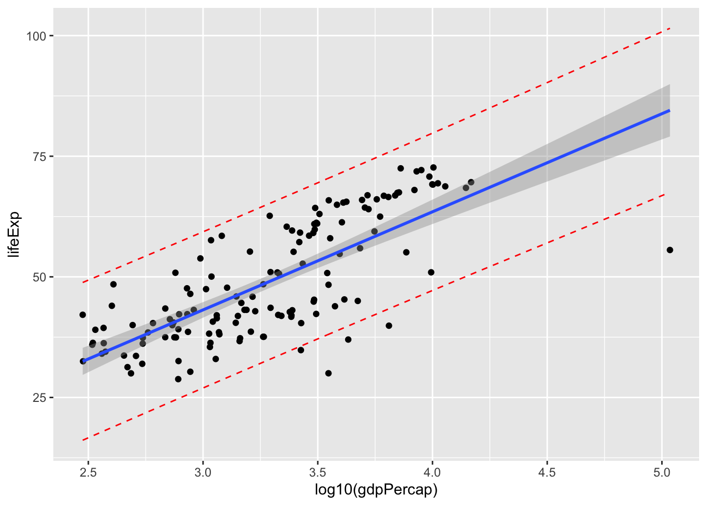
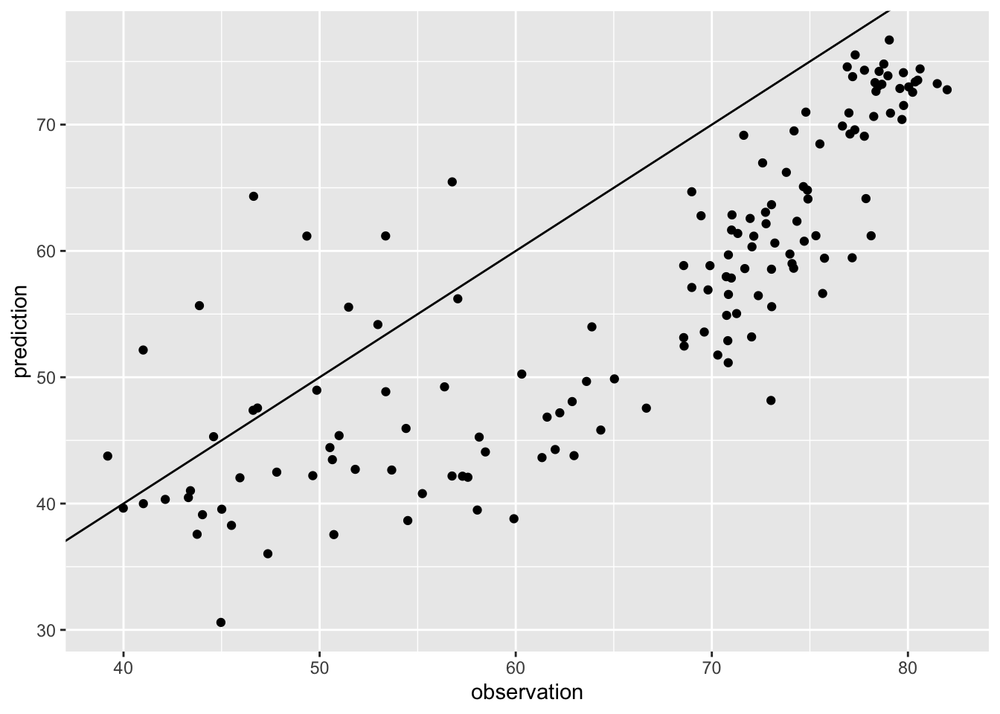

’통계적 모델링과 선형회귀(I)
Yoon-Ho Hong
2022-08-23
이번 시간에는 선형회귀에 대해 학습합니다. 선형회귀에 앞서 먼저 통계적 모델링의 정의, 목적, 그리고 기본적인 개념에 대해 간단히 정리해봅시다.
통계적 모델링
통계적 모델링이란 확률적인 모형을 가지고 현실세계의 데이터 생성과정을 모방하는 것을 가리킵니다.
All models are wrong. Some models are useful. – George Box
통계적 모델링의 목적은 다음과 같습니다.
- 불확실성의 측정
- 추론
- 가설 검정
- 예측
통계적 모델링의 가장 간단한 형태로 평균을 구하는 문제를 생각해봅시다.
우리는 표본의 정보를 사용하여 모집단의 평균을 추정하고자 합니다. 예를 들어, 어떤 변수 Y의 모평균 \(\mu\)를 알고자 한다고 해봅시다.
유감스럽게도 \(\mu\)는 알려져 있지 않습니다. 그러나, 우리는 Y의 n개 관측치, \(y_1\), \(y_2\), …, \(y_n\)를 알수 있고, 아래식에서와 같이 표본평균 \(\overline{y}\)을 모평균의 추정치 \(\hat{\mu}\)로 간주할 수 있습니다.
\[\hat{\mu}=\overline{y}\]
그럼, 표본평균은 모평균의 추정값으로 얼마나 정확하다고 말할 수 있을까요?
이 질문은 통계적으로 표준오차(standard error)를 묻는 것입니다.
표준오차는 표본평균의 표준 편차를 말합니다. 표본 평균의 평균은 모평균과 같으므로, 표준오차는 표본평균이 모평균으로부터 얼마나 떨어져 있는가를 나타냅니다.
표준오차는 모집단의 표준편차(sigma)를 표본크기(n)의 제곱근으로 나누어서 구할수 있습니다. 그러나 모집단의 표준편차는 알 수 없으므로, 표본 표준편차로 근사합니다. 표본 표준편차는 표본의 잔차제곱합(residual sum of square)을 n의 제곱근이 아닌 n-1의 제곱근으로 나누어서 구합니다.
\[SE = \frac{s}{\sqrt{n-1}}\]
\(s\): 표본 표준 편차 \(n\): 관측치의 개수(표본의 크기)
선형 회귀(linear regression)
선형 회귀는 최신의 기계학습 기법만큼 흥미롭지 않을 수도 있지만, 여전히 유용하고 자주 사용되는 방법입니다.
사실 많은 기계학습 기법이 선형회귀의 일반화 혹은 확장으로 볼 수 있습니다. 따라서, 더 복잡한 기계학습 기법에 대해 학습하기 전에 선형회귀에 대해 잘 이해하는 것이 매우 중요합니다.
선형회귀 모델을 gapminder 자료에 적용해 다음 질문들에 답해보기로 합시다.
일인당 국민소득과 기대수명은 상관관계가 있는가?
일인당 국민소득과 기대수명사이에 얼마나 강한 상관관계가 있는가?
기대수명에 대한 일인당 국민소득의 효과는 어느정도이며, 얼마나 정확하게 추정할 수 있는가?
기대수명에 대해 얼마나 정확하게 예측할 수 있는가?
library(gapminder)
library(dplyr)
library(ggplot2)gapminder %>%
filter(year == 1952) %>%
ggplot(aes(gdpPercap, lifeExp)) +
geom_point()
gapminder %>%
filter(year == 1952) %>%
ggplot(aes(gdpPercap, lifeExp)) +
geom_point() +
scale_x_log10()
- 일인당 국민소득과 기대수명은 상관관계가 있는가?
위 질문에 답하기 위해 우리는 다음 두 가지를 하였습니다.
- 선형회귀 모델의 적합
- 가설 검정 \(\beta_x\) = 0
귀무 가설 검정에 t-statistic 을 사용하였습니다. t statistic formula
는 아래와 같습니다.
\[t=\frac{\overline{x}-\mu_o}{SE}\]
\(\overline{x}\): sample mean
(coefficient in linear regression)
\(\mu_0\): population mean (coefficient
in linear regression) SE: standard error (of the coefficient in linear
regression)
\(\overline{x}\) 는 최소제곱법(least square method)으로 구합니다. 최소제곱법은 잔차제곱합(residual sum of squares, RSS)을 최소화하는 계수 추정치를 구하는 방법입니다(미분을 사용함).
\(\mu_0\) 는 귀무 가설에서 0 입니다(기울기가 0이라는 것은 상관관계가 없다는 뜻)
계수 추정치의 표준오차를 계산하기 위해서는 다음 식을 사용합니다.
\[SE(\hat{\beta_1}) =
\frac{\sigma}{\sqrt{\sum_{i=1}^{n}{(x_i-\overline{x})^2}}} \]
\(\sigma\) 는 랜덤오차의 표준편차로
일반적으로 알 수 없지만, 그 추정치는 잔차표준오차(residual standard
error, RSE)로 \(RSE =
\sqrt{RSS/(n-2)}\) 로 구합니다.
위 식에서 직관적으로 표준오차는 RSS 가 작을 수록, 그리고 \(x_i\)가 넓게 퍼질수록(기울기를 추정할
레버지리(leverage)가 크다고 합니다) 더 작아진다는 것을 알 수
있습니다.
자유도가 n-2 (=140)인 t 분포에서(n이 대략 30보다 크면 t 분포는 정규분포와 아주 유사) t 값이 위에서 구한 \(|t|\) 값보다 큰 경우를 관측할 확률(즉, p-value)을 구함으로써 상관 관계를 유추할 수 있습니다.
즉, p-value 가 충분히 작으면(예를 들어, 0.05보다 작으면) 귀무가설을 기각하고 상관관계가 있다고 합니다.
- 일인당 국민소득과 기대수명사이에 얼마나 강한 상관관계가 있는가?
귀무가설을 기각하고 대립가설을 채택했다면, 모델이 데이터에 적합한 정도를 수량화하고자 할 것입니다.
선형회귀적합의 정도는 보통 잔차표준오차(RSE)와 \(R^2\) 통계량을 사용합니다. RSE 는 위에서 살펴보았으니, \(R^2\) 를 어떻게 구하는지 알아봅시다.
\[R^2 = \frac{TSS -
RSS}{TSS}\]
- \(R^2\): the proportion of the total
variation explained by the fit (regression model)
- TSS: Total sum of squares (aka, SS around the mean) - RSS: Residual
sum of squares (aka, SS around the fit)
\(R^2\)는 반응변수의 전체 분산에서 회귀
모델에 의해 설명되는 변동 비율을 말합니다.
linear model을 적합시키는 함수로 lm()을 사용합니다.
lm(lifeExp ~ log10(gdpPercap), data = gapminder[gapminder$year == 1952,])##
## Call:
## lm(formula = lifeExp ~ log10(gdpPercap), data = gapminder[gapminder$year ==
## 1952, ])
##
## Coefficients:
## (Intercept) log10(gdpPercap)
## -17.85 20.33통계적 모델링의 결과를 보기위해 summary() 함수를 사용합니다.
lm_fit = lm(lifeExp ~ log10(gdpPercap), data = gapminder[gapminder$year == 1952,])
summary(lm_fit)##
## Call:
## lm(formula = lifeExp ~ log10(gdpPercap), data = gapminder[gapminder$year ==
## 1952, ])
##
## Residuals:
## Min 1Q Median 3Q Max
## -28.9571 -5.7319 0.7517 6.5770 13.7361
##
## Coefficients:
## Estimate Std. Error t value Pr(>|t|)
## (Intercept) -17.846 5.067 -3.522 0.000578 ***
## log10(gdpPercap) 20.331 1.526 13.326 < 2e-16 ***
## ---
## Signif. codes: 0 '***' 0.001 '**' 0.01 '*' 0.05 '.' 0.1 ' ' 1
##
## Residual standard error: 8.146 on 140 degrees of freedom
## Multiple R-squared: 0.5592, Adjusted R-squared: 0.556
## F-statistic: 177.6 on 1 and 140 DF, p-value: < 2.2e-16
- 기대수명에 대한 일인당 국민소득의 효과는 어느정도이며, 얼마나 정확하게 추정할 수 있는가?
계수 추정치가 약 20입니다. 이는 log10(gdpPercap)가 1 증가할 때(일인당 국민소득이 10배 증가할 때) 기대수명이 평균 20년 증가한다는 것을 의미합니다.
이러한 추정치가 얼마나 정확한가에 대답하기 위해서는 표준오차를 살펴야합니다.
표준오차는 신뢰구간을 계산하는데 사용됩니다. 계수 추정치에 대한 95% 신뢰구간은 실제값이 95%의 확률로 존재하는 구간이며 대략 아래와 같은 형태를 가집니다.
\[[\hat{\beta_1}-2SE(\hat{\beta}), \space \hat{\beta_1}+2SE(\hat{\beta})]\]
confint(lm_fit, level = 0.95)## 2.5 % 97.5 %
## (Intercept) -27.86295 -7.828398
## log10(gdpPercap) 17.31506 23.347735
- 기대수명에 대해 얼마나 정확하게 예측할 수 있는가?
위에서 신뢰구간은 기대수명에 대한 일인당국민소득의 평균 효과를 둘러싼 불확실성을 수량화하는 것입니다.
반면, 예측구간(prediction interval)은 특정 국가의 기대수명에 대한 불확실성을 수량화하는데 사용합니다. 예측구간은 신뢰구간보다 항상 더 넓습니다. 이유는 예측구간은 계수에 대한 추정오차(축소가능오차) 뿐만아니라 축소불가능 오차를 포함하기 때문입니다.
predictions = predict(lm_fit, interval = "predict")## Warning in predict.lm(lm_fit, interval = "predict"): predictions on current data refer to _future_ responsesdf = gapminder[gapminder$year == 1952,]
df_pred = cbind(df, predictions)
df_pred %>%
ggplot(aes(log10(gdpPercap), lifeExp)) +
geom_point() +
stat_smooth(method = "lm") +
geom_line(aes(y=lwr), col = "red", linetype = "dashed") +
geom_line(aes(y=upr), col = "red", linetype = "dashed")## `geom_smooth()` using formula 'y ~ x'
1952년 데이터를 이용해 학습시킨 이 단순회귀 모델을 이용해 2002년 기대수명을 예측해봅시다.
gapminder_2002 = gapminder %>%
filter(year == 2002) %>%
select(lifeExp, gdpPercap)예측값의 산출을 위해 predict() 함수를 사용합니다.
예측값과 실제 관측값이 얼마나 다른지 살펴봅시다.
df = data.frame(observation = gapminder_2002$lifeExp, prediction = pred)
ggplot(df, aes(observation, prediction)) + geom_point() + geom_abline(slope = 1, intercept = 0)
회귀모델의 예측 정확도를 나타내는 정량 지표로 RMSE (Root mean squared error)를 사용합니다.
MSE = variance = average SS not explained by the fit
rmse = function(x){
sqrt(sum((residuals(x)^2))/df.residual(x))
} # x = lm.fit rmse(lm_fit) # gapminder_1952## [1] 8.146311rmse(lm(observation ~ prediction, df)) # gapminder 2002## [1] 6.962083Confidence interval을 구해봅시다.
참고자료
[Standard error & bootstrapping]
standard error and
bootstrapping
표준 오차는 신뢰구간을 계산하는데 사용될 수 있습니다. [동영상]
confidence
interval